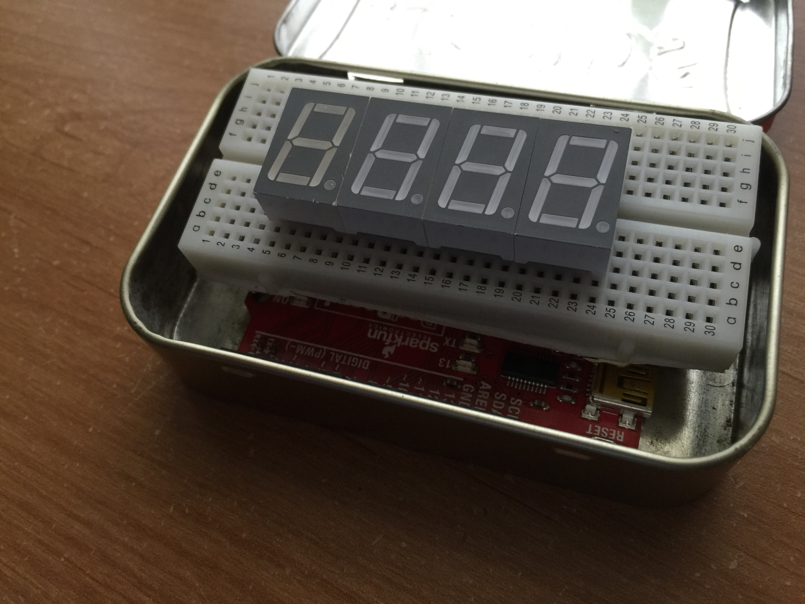

Making an Arduino Clock
8/19/2015
I have a old Timex Radio Clock that wasn't cutting it for me. Firstly, the clock was simply too large, leaving no space on my nightstand. Secondly, the clock had so many unnecessary features, like "nature sounds" or the radio. Finally, the LCD display backlight was too dim, probably from age, making it difficult to read in the dark.
So instead of going on Amazon and buying a new clock, I followed the true engineer's motto: build your own.
The Build
The parts and build idea for this project were pretty straightforward, espicially since I had an Arduino Uno acting as the microcontroller. I realize that I could have gone with a more specalized design, using a clock circuit, a CD4026B Counter, and something like a 74AC11008 Quad AND Gate IC, but since I had the Arduino on hand, I decided it would just be easier to work with it (not to mention cheaper, since I'm not buying anything!).
Aside from the Arduino, here are the other parts I used:
{kind=link}
- Altoids Tin
- Wires
- 4x Seven Segment Displays
- Small Breadboard
- 100 Ohm Resistors, you can use any value you like, depends on how bright you want. 330 Ohm was the highest I went.
- Arduino Uno
- (Not Pictured) USB Cable
- (Optional) 9V battery
{kind=link}
You might be thinking, "Hold up, that's not a Arduino Uno, its painted red!" and you'd be right. It is in fact, a SparkFun RedBoard which I got as part of my university's Intro to Electronics class, but it's basically an Uno clone.
{kind=link}
The first thing I did was remove the power headers from the breadboard and place my seven segment displays in the middle of the board. The power headers were taking up too much space and didn't allow me to slide the breadboard between the headers of the Arduino, making the whole assembly thinner.
Next came the really hard part, the wiring, but before I show what I did, we should look at some theory.
CharliePlexing
A problem that comes with using 4 seperate seven segment displays instead of a pre-packaged design is the number of pins that you have to handle. Since we aren't using any IC's, the situation is further complicated. So how do we connect the 30-something pins of our display to the 13 pins of our Arduino? Charlie Allen at Maxim Integrated is one of the people who came up with a solution with his namesake.
CharliePlexing takes advantage of the "tri-state" ablity of these I/O boards. In other words, the "DIGITAL" pins on an Arduino can be in three states: HIGH, LOW (Ground), or HI-IMPEDENCE (Input). HIGH delivers the pin voltage, LOW delivers 0V or ground, while HI-Z acts as an input, or in our case "disconnected".
What Charlie Allen found, and Maxim Integrated later used in their products is that n2-n LED can be driven with n pins. Let's analyze how this works with a circuit that has 6 leds driven by 3 pins.

As you can see, 6 LEDs are wired using only 3 pins, and three resistors. To understand this, let's focus on LED1 and LED3. How can I light LED1 without turning on LED3? It's simple, we set Pin 1 to HIGH, Pin 2 to LOW and Pin 3 to HI-Z. This way, the circuit to Pin 3 never completes, and we have only 1 LED on. In the same way, we can control any LED, or combination of LEDs in the circuit. We apply this same principle on our Seven Segment Displays.

As shown in the image above, 8 Seven segment displays are charlieplexed using 8 pins. This is again accomplished using various pins as ground, source, and HI-z. I applied the same technique to my clock, and charlie plexed 4 seven segment displays. The results looked something like this:
{kind=link}
And on the other side...
{kind=link}
After the tedious wiring, all that was left was to hook the whole thing up to the arduino and package it in my Altoids Tin. I added 100 Ohm resistors after some testing to see what brightness worked well for me. I also managed to squeeze the breadboard between the AC power port and Digital Pin headers on the Arduino. This saved a lot of vertical space and kept everything well fitting.
{kind=link}
After the wiring was complete, it was just a simple matter of programming the darned thing! I accomplished this by creating a byte array for each number, for each seven segment display. Essentially, we need to have specific pins that are on and off (and one at HI-Z) to make a digit appear on a display. However, this could also trigger other displays if we are not careful and cause them to print weird characters. So, you have to individually test your wiring and layout with the byte array you write. There is probably a more efficient way to do this, but manually working my way through each display let me catch wiring errors.
Here's a snippet of the code I used, this prints out the time, on one display, so you only know the minutes. But if this code is expanded to include every display, it will show the correct time.
#include <Time.h>
const byte digitalLine[9] = {2,3,4,5,9,10,11,12};
byte digitValue[4];
const byte segmentPattern[10] = {
B11111101,
B10010000,
B11101011,
B10111011,
B10010111,
B00111111,
B01111111,
B10011000,
B11111111,
B10111111 };
void setup() {
Serial.begin(9600);
setTime(16,32,00,2,8,2015);
}
void loop() {
// Display time
time_t t = now();
Serial.print(hour(t));
Serial.println(minute(t));
Serial.println((hour(t)*100)+minute(t));
int x = ((hour(t)*100)+minute(t));
// Turn the number to be displayed into 4 digits
digitValue[3] = x % 10;
digitValue[2] = x / 10 % 10;
digitValue[1] = x / 100 % 10;
digitValue[0] = x / 1000 % 10;
// Briefly light each digit
for (byte digit = 0; digit < 4; digit++) {
// Set up the segments for this digit
for (byte segment = 0; segment < 8; segment++) {
byte useSegment = segment;
// If this segment's line also happens to be the line controlling
// the whole digit, the 9th line will be wired up instead
if (segment == digit) useSegment = 8;
// look up the value for this segment for this digit
if (bitRead(segmentPattern[digitValue[digit]], segment) == 1) {
// the segment needs to be on
pinMode(digitalLine[useSegment], OUTPUT);
digitalWrite(digitalLine[useSegment], LOW);
} else {
// the segment needs to be off
pinMode(digitalLine[useSegment], INPUT);
}
}
// all segments now ready, so switch on the digit
pinMode(digitalLine[digit], OUTPUT);
digitalWrite(digitalLine[digit], HIGH);
// Wait a moment
delay(1);
// Switch the digit off again
pinMode(digitalLine[digit], INPUT);
}
}
After you fiddle around with the code, you can get a beautiful clock running in no time, and even if it doesn't have the most features, who cares! You made it yourself! Speaking of features, there is tons of room to expand with this project, from buttons to set the time, to an alarm (a simple pezio-buzzer can do that), or maybe you want to build a radio clock. Go crazy, it's your clock after all!
UPDATE:I've uploaded my code to GitHub, you can find the full source here.
{kind=link}